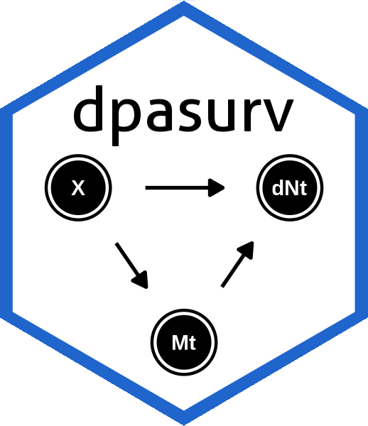
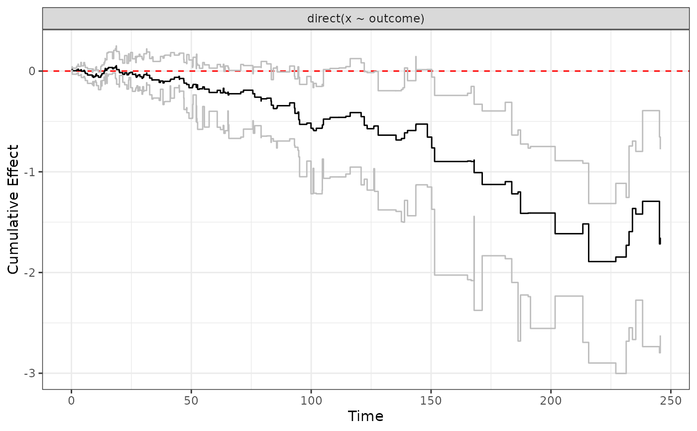
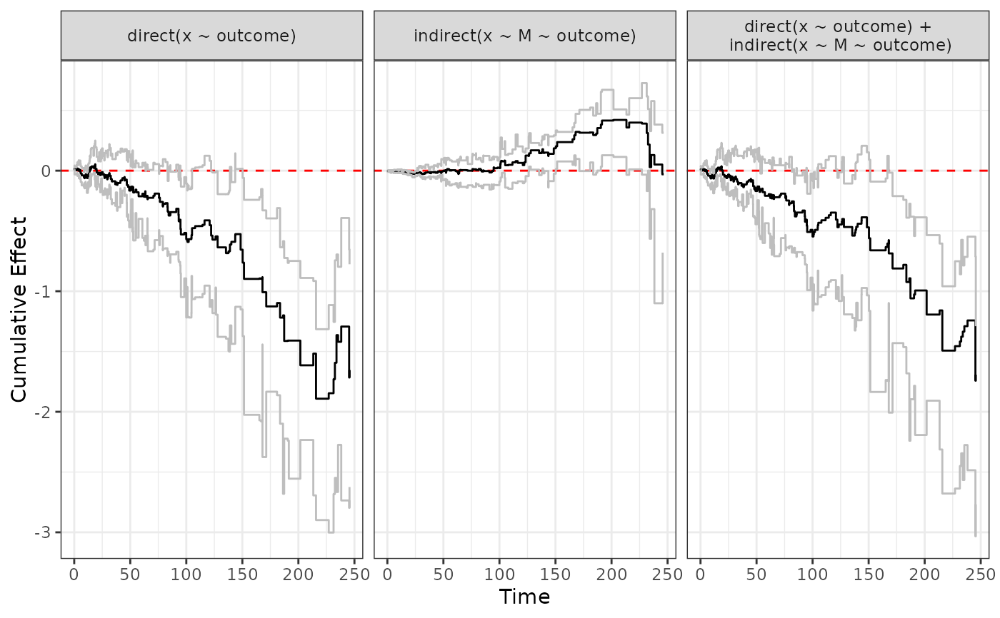

Plot effects from dynamic path analysis along with bootstrap confidence bands
ggplot.effect.Rdplotting method for class "effect"
Usage
ggplot.effect(
object,
relative = FALSE,
titles = NULL,
yintercept = 0,
linetype = "dashed",
x_label = "Time",
y_label = NULL
)Arguments
- object
object of class "effect", or list of objects of class "effect"
- relative
should the effect be plotted on a relative survival scale (i.e. `y=exp(-effect)`)?. Defaults to FALSE.
- titles
If NULL, function will automatically generate. Otherwise character vector of length equal to number of elements in object list
- yintercept
y-intercept of horizontal line. Defaults to 0.
- linetype
type of horinzontal line to plot. Defaults to "dashed".
- x_label
Label for x-axis. Defaults to "Time"
- y_label
Label for y-axis. Default when object scale is "cumulative" will be "Cumulative Effect" (relative=FALSE) and "Relative survival" (relative=TRUE). If object scale is "identity" then the default y_label will be "Effect".
Examples
library(dpasurv)
data(simdata)
set.seed(1)
s <- dpa(survival::Surv(start,stop,event)~M+x, list(M~x), id="subject", data=simdata, boot.n=50)
direct <- effect(x ~ outcome, s)
indirect <- effect(x ~ M ~ outcome, s)
total <- sum(direct, indirect)
ggplot.effect(direct)

ggplot.effect(list(direct, indirect, total))
